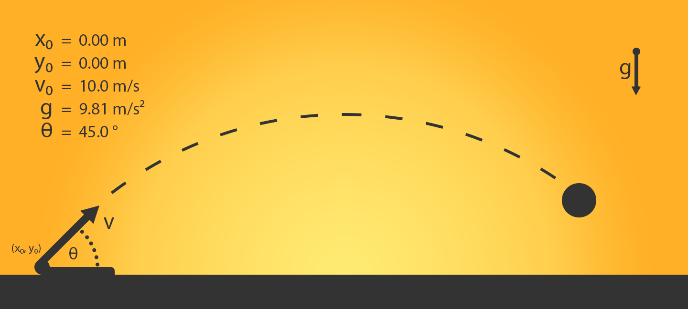
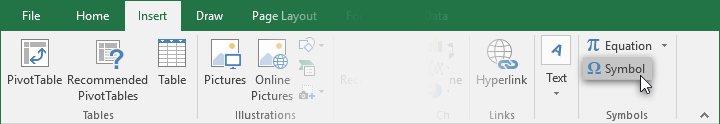
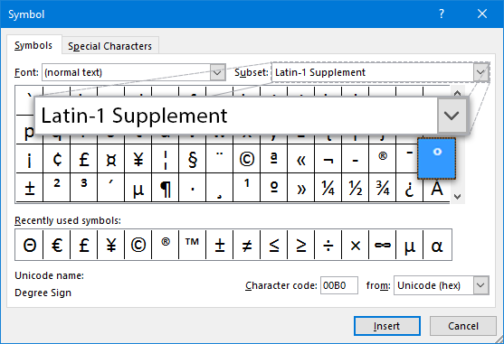
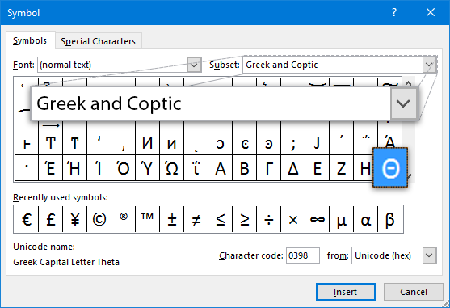
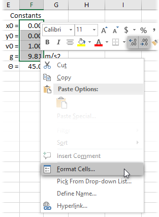
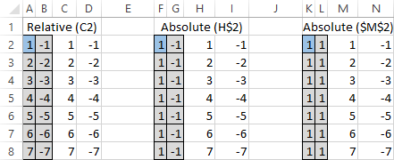
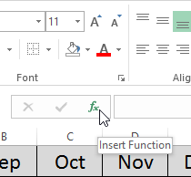
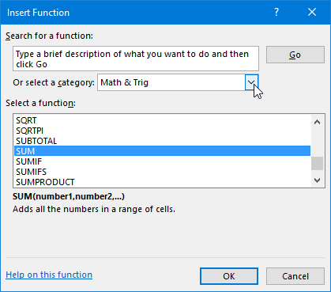
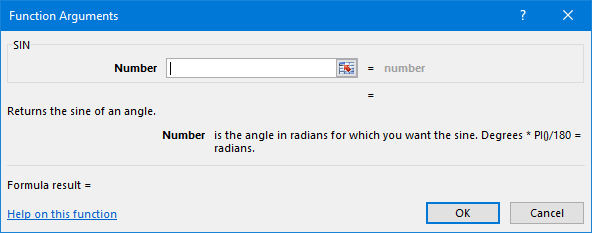
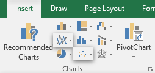

In this lab you will be using Excel to calculate and graph the trajectory of a projectile in a magical Earth-sized world with no friction. You will learn:
how to layout and format a spreadsheet
when and how to use relative or absolute references
how to get the software to do calculations for you
how to generate charts to visualize your data
Task 1: Preparing Constants
There are several unchanging numbers (constants) that will be needed to calculate the trajectory later on. Instead of entering them manually whenever they're needed, they will be stored in their own section of the spreadsheet, and then referenced. After the calculations and graphs are done, these values can be modified and the results will automatically update to reflect them.

Create a new spreadsheet and record the constants shown in the above diagram. Give it a Constants title. Put the labels, values, and units each into their own column. Insert the theta: Θ and degree: ° characters where needed.
Inserting Special Characters
A collection of available characters is available in the Symbols window found in the Insert ribbon. Use the Subset drop-down to help find the symbols you need. The degree symbol is found in Latin-1 Supplement and theta is found in Greek and Coptic.

Where to find degrees

Where to find theta
Format the superscript in m/s2 and all the constants to 3 significant figures (as in the diagram). Excel unfortunately does not have a way to set the number of significant figures automatically without using several math functions, so add the appropriate decimal places to each using cell formatting.
Reminder: Cell formatting
Along with their place in the home ribbon, cell formatting options can be found in the quick settings box that appears above a cell selection's context menu. A context menu is a list of context-sensitive actions that appears when the right mouse button is clicked on something.
For a complete list of cell formatting options, select Format Cells in the context menu.
Use the alignment options in the home ribbon to make the constants section well-spaced and easy to read. Don't bother resizing the columns yet, you will probably want to do that later, after the data has been recorded.
Task 2: Calculating and Generating Data
The end goal is to chart the path of motion of the projectile over a time interval, so the next step is to create formulas that calculate the projectile's x and y position at a given time. This requires knowing the speed in each direction, and since we only know the angled launch velocity, some basic trigonometry will be needed. Excel includes all the trig functions you will need: SIN(), COS(), and PI() (the sin and cos functions use radians).
Below the constants, create headers for three columns to contain Time(s), x(t), and x(y)
Use autofill to extend time from 0 to 1.4 at 0.1 second increments. Format this column to use 3 significant figures.
Reminder: Using Auto Fill
Selected cells will have a small box in the bottom-right corner of the selection area. If you click and drag this into adjacent cells, Excel will intelligently generate data based on the selected content into the new cells.
For example, if the selected cells contain the first few numbers of a simple pattern (such as three cells with 0, 1, and 2), Excel will generate more numbers that follow the sequence.
Create formulas in the first row of the x(t) and y(t) to calculate the position at the given time. Be sure to use absolute references to your constants where needed. The basic distance traveled formula is: d = d0 + v0t + ½at2. Hint: Gravity is negative acceleration in the y direction.
Reminder: Absolute References
A reference is created by typing the cell's address into the formula bar. By default, this is a relative reference, which will be different for each cell in an autofill. This is usually the desired result. In this assignment, for example, each row must reference the time interval directly left of it.
However, this is not wanted when referencing constant values. We want to always point to the same cell no matter what autofill is doing. To create an absolute reference, place a $ symbol in front of the direction you want to lock in the cell reference.
For example, if you are autofilling into new rows, you only need to stop the reference from updating the row part of the cell address, for example: B$2 will not change to B$3 in the next autofilled row. If this same reference was autofilled into new columns, the address would change to C$2 in the next cell.
Reminder: Using Functions
There are two main ways to use functions in Excel. If you are already familiar with the function you need, just directly type it into the formula. If, however, you need to look up a function, use the function wizard.

Click the Insert Function (fx) button to the left of the formula bar.

Use either the search field or the category drop-down to find the desired function in the list, then click OK.

The Number field accepts static numbers and/or references to one or more cells. The result of this field will be what is passed to the function. While typing in the field, click a cell to automatically insert its address. You will need to add $ symbols yourself if you need absolute references. Press OK to finish and insert the function into the formula bar.
Autofill the x(t) and y(t) columns to match the time column. You can do both of them with a single selection and fill operation. If you get #VALUE! errors, double check that all references to your constants are absolute in the vertical direction. If the value does not increase with time, make sure your reference to the time column is relative.

Charting the Results
Generating Charts
Select the data you wish to generate a into a chart. Column headings can be selected too; Excel will automatically add them as labels to the chart.
Pick a chart type in the Charts section of the Insert ribbon. Clicking Recommended Charts will open a window with a list of charts Excel thinks will be useful, as well as a tab to view all possible charts. In this
After the chart has been generated, double-click elements to modify them.
Select the data you wish to generate a into a chart. Column headings can be selected too; Excel will automatically add them as labels to the chart.
Review
Create a new worksheet called Review and write some notes describing what new things you have learned in this lab. Also mention any steps or concepts you are still finding difficult to understand and would like to receive feedback on.
Deliverables
A single Excel document containing three worksheets (Power2, Stock prices and Review).
Power2 Worksheet:
powers of 2 from 20 to 2400, in steps of 10
powers of 10 from 100 to 10120, in steps of 3
the ratio of each "equivalent" power of 2 and 10
a chart of the ratios
Stock prices Worksheet:
a date column
two stock value columns
two columns computing the ratio of each row's stock value to the initial value for that stock
a graph comparing the change in stock for both companies.
Here are some extra steps to consider to help your Overall Assessment
Use an Excel function to calculate the formulas in task 1.
Customize the style of your graphs.
Use fill colors, borders, and font sizes to pretty up your tables of data.
Save your document as Stocks_Firstname_Lastname.xlsx and submit it to the dropbox on D2L.
NOTE: This assignment is to be done individually. You can
help one another with problems and questions, but in the end everyone must
do their own assignment.
Criteria
Marks
Power2 Worksheet
Data
2
Chart
1
Stock Prices Worksheet
Data
3
Chart
2
Overall Assessment
Demonstrates a solid understanding of the material